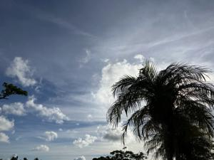
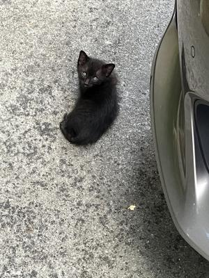

うるがいの話 ある日
最新: 慰霊の日【うるがいの話 ある日】とは 一日だけのプログです
『うるがいの話』の最新一日だけのプログで、通信料が少なく経済的だ。カニの画像をクリックすると全ての日付が載る『うるがいの話』サイトを表示します
|
|
【うるがいの話】 うるがい(ｳﾙｶﾞｲ urugai)とは、『もずくがに』の名前でとても大きくなります。 |
|---|---|
|
|
【カミマヤーの話】 猫のことを方言でマヤーといいます。カミマヤー（kamimayaa）とは、神の猫のことです。 |
|
【たながぁの音楽】 たながぁ（ﾀﾅｶﾞｰ tanagaa）とは手長えびのことで、何種類かあり大きいのは車 エビぐらいになります。 |

|
【ぶながぁの話】 ぶながぁ(ﾌﾞﾅｶﾞｰ bunagaa)とは、赤い髪の毛、赤い身体、そして身長は１ｍ２０ｃｍ ぐらい、川の蟹を食べているの目撃された。場所は沖縄県国頭郡大宜味村のと ある村僕の隣近所に住んでいる爺さんから、聞いた話です。 |
|
|
【ギーマの話】 ギーマ(giima)とは、山原の里山に咲くスズランに似た、 花を付けます。実は食べられます、 気が付くと口の周りが紫になっています。 |
2025年06月23日 (月）慰霊の日
16:20

戸籍謄本より
三男（父親の親）
〇喜 １９０３年２月２８日～１９４５年７月２３日 ４２才
沖縄県島尻郡糸満町
長女（父親の親）
カメ １９０５年３月１８日～１９４５年７月２３日 ３９才
八重山郡石垣村字石垣
フィリピン群島海上で死亡（詳細記述なし）
長男（父親の兄）
〇盛 １９２７年９月１５日～１９４５年６月２０日 １７才
沖縄県立第一中学校（４年生） 鉄血勤皇隊・通信隊』
昭和弐捨年六月弐捨日時刻不詳沖縄本島摩文仁村で戦死
父親は、９歳で戦争孤児となる。父親には弟が一人いて親戚に預け
られたが、扱いがひどかったと聞かされた。オジィー達は、フィリ
ピンから沖縄へ、船で引き上げるときに沈没したと聞いた。
家の駐車場にいる子猫
